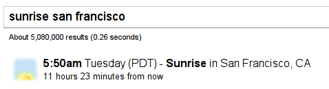
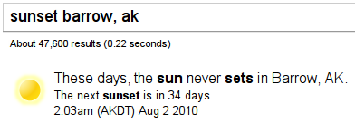
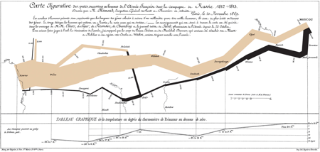
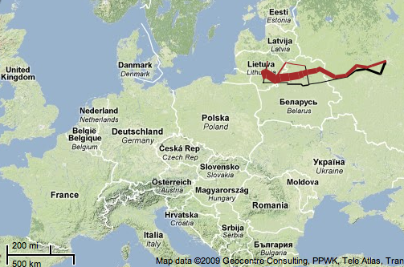

05.14.12
Posted in programming, web at 10:04 am by danvk
I recently wanted to center some content both vertically and horizontally on a web page. I did not know in advance how large the content was, and I wanted it to work for any size browser window.
These two articles have everything you need to know about horizontal centering and vertical centering.
The two articles don’t actually combine the techniques, so I’ll do that here.
In the bad old days before CSS, you might accomplish this with tables:
<table width=100% height=100%>
<tr>
<td valign=middle align=center>
Content goes here
</td>
</tr>
</table>
Simple enough! In the wonderful world of HTML5, you do the same thing by turning divs into tables using CSS. You need no fewer than three divs to pull this off:
<div class="container">
<div class="middle">
<div class="inner">
Content goes here
</div>
</div>
</div>
And here’s the CSS:
.container {
display: table;
width: 100%;
height: 100%;
}
.middle {
display: table-cell;
vertical-align: middle;
}
.inner {
display: table;
margin: 0 auto;
}
A few comments on why this works:
- You can only apply
vertical-align: middle to an element with display: table-cell. (Hence .middle)
- You can only apply
display: table-cell to an element inside of another element with display: table. (Hence .container)
- Elements with
display: block have 100% width by default. Setting display: table has the side effect of shrinking the div to fit its content, while still keeping it a block-level element. This, in turn, enables the margin: 0 auto trick. (Hence .inner)
I believe all three of these divs are genuinely necessary. For the common case that you want to center elements on the entire screen, you can make .container the body tag to get rid of one div.
In the future, this will get slightly easier with display: flexbox, a box model which makes infinitely more sense for layout than the existing CSS model. You can read about how do to horizontal and vertical centering using flexbox here.
Permalink
03.27.11
Posted in personal, programming, web at 2:07 pm by danvk
It’s been almost a year since I introduced lmnowave, the collaborative crossword puzzle gadget for Google Wave. A lot has happened in that past year, not least the cancelation of Wave.
First, to clear up some confusion. It’s not “I’m no wave”, it’s “L-M-N-O-Wave”, which is a play on “L-M-N-O-Puz”, aka lmnopuz, the software on which my collaborative crossword system is based. Only a few dozen people ever saw lmnopuz, so no one got the joke. And I realized after releasing it that, by changing ‘puz’ -> ‘wave’, I’d taken away any hint of what my wave gadget actually did. A bad name. Oh well.
In August, Google announced that Wave was canceled. This seemed to be the end of lmnowave. Sure, Wave was still usable. But the life had been sucked out of the project. This was quite disappointing to me, since I’d spent a fair bit of my own time developing the crossword gadget.
Then, in mid-December, Douwe Osinga introduced the oddly-named Google Shared Spaces. It’s an attempt to salvage the Wave gadget code, to let it live outside of Wave.
For lmnopuz, it’s perfect. Here’s the lmnowave shared space. You can use it to collaborate on crosswords with your friends, just like you could with lmnowave. In some ways, it’s even better, since the Wave UI is stripped away and you can focus on your puzzle. To do crosscountry crosswords, my friend and I open up a shared space and call each other on Skype. The combination works really well.
What does the future hold for lmnowave? It’s a bit unclear. I may turn it into a Facebook game, or perhaps use it to learn how to write applications for the Mac App store.
Enjoy!
Permalink
03.09.11
Posted in programming, web at 8:16 am by danvk
At work, I often see web pages that display large numbers like so:
| num-bytes |
1,234,567,890 |
| num-entries |
123,456,789 |
Including the commas in the display makes the numbers easier to read. But it does have a downside. Say you want to calculate the average number of bytes per entry. If you copy/paste the numbers above, the commas will prevent most programming languages (e.g. python or bc) from interpreting them correctly.
My coworker Dan came up with a great solution to this conundrum using CSS. Try copy/pasting these numbers over into the text box:
- 1234 or 2345
- -12345.67
- -123456789
|
|
The commas don’t copy! Best of both worlds!
You can view source to see how it works, but let’s jump straight to the goodies:
Bookmarklet: commacopy
Unobtrusive JavaScript: commacopy.js
To use the bookmarklet, drag it to your browser’s bookmarks toolbar. If you click it, it will silently convert all numbers containing commas on the current page to the fancy copy/pasteable commas. This should really be a Chrome extension that runs on every page, but I’ll leave that as an exercise for the reader.
To use the unobtrusive JS, make a copy of commacopy.js and include it in your page via:
<script src="commacopy.js" language="text/javascript"><script>
commacopy works by converting a number like:
123,456,789
into this HTML:
<style type="text/css">
.pre-comma:before {
content: ",";
}
</style>
123<span class='pre-comma'>456</span><span class='pre-comma'>789</span>
The commas are only present in a CSS style, rather than in the text itself. For reasons which aren’t entirely clear to me, this means that they don’t make it into the clipboard when you copy/paste them.
Permalink
06.28.10
Posted in astronomy, personal, web at 6:45 pm by danvk
If you try searching for [sunrise san francisco] on Google, you’ll see a special display in the results:

This is known as a “onebox”. It’s designed to get you answers quickly. Other examples include the calculator (e.g. [2*2]), weather ([weather 94110]) and time ([time italy]) oneboxes.
The sunrise/sunset onebox is a project that I worked on in my spare time and recently launched. You can read more about it on the Official Google Blog. I first had the idea for this onebox about two years ago, so it’s very gratifying to see it finally launch!
A few features which are worth calling out:
- The sunrise and sunset times are calculated when you perform your query. They are a function of latitude, longitude and the current time. The algorithm is based on the one used by NOAA.
- In most places, you can just search for [sunrise] or [sunset] to get results for your current location. Google figures this out based on your IP.
- This onebox works on mobile phones, too, so you can search for sunset times when you’re out on a hike.
There’s a wrinkle to the sunrise/sunset calculation that non-astronomers don’t typically think about. The sun starts to behave strangely once you get north of the arctic circle or south of the antarctic circle. If you’re north of the arctic circle, then there will be at least one day during the summer when the site never sets. And there will be at least one day during the winter when it never rises. This is truly a special case for the onebox! Here’s what it looks like:

I feel bad for those Barrowans — hopefully they’ll be able to fall asleep sometime in the next 34 days!
Permalink
12.04.09
Posted in web at 5:29 pm by danvk
Charles Minard’s chart of the demise of Napoleon’s Grand Armée is famous for its “brutal eloquence”. Edward Tufte says it “may well be the best statistical graphic ever drawn”.

The width of the line represents the size of Napoleon’s army as it marched to Moscow and then retreated.
I found a version of this visualization put on a Google Map using protovis. This visualization is great! It draws attention to one of the main problems with this famous visualization: it doesn’t give any geographical context. I had no idea where Napoleon’s army started and turned around until I saw this map:

Some things that stand out:
- The Grand Armée was way far away from France at the start of this.
- The march wasn’t as long as I’d imagined. When I think “march across Russia”, the image in my mind goes halfway across Siberia.
Permalink
« Previous Page — « Previous entries
Next entries » — Next Page »
{kind=link}